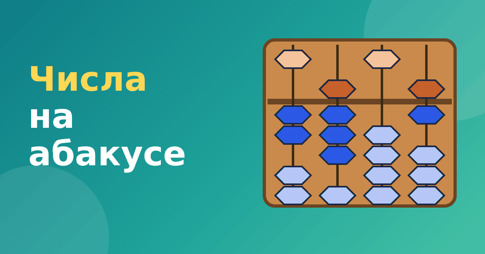

Как набирать и читать числа на абакусе: от единиц до тысяч

Прежде чем складывать и вычитать, нужно научиться самому простому: набирать и читать числа на абакусе. Звучит просто, но именно здесь закладывается основа всего счёта. Если ребёнок уверенно видит числа на счётах, дальше всё идёт легче. В этой статье разберём, как считать на абакусе, начиная с цифр и заканчивая числами до тысяч.
Один стержень — одна цифра
На абакусе каждый стержень показывает одну цифру от 0 до 9. Верхняя бусина стоит как 5, нижние как 1, но считаются только те, что прижаты к перекладине. Вот как набираются все цифры:
- 0 — все бусины отодвинуты от перекладины.
- 1, 2, 3, 4 — прижаты столько нижних бусин, какова цифра.
- 5 — прижата только верхняя бусина.
- 6, 7, 8, 9 — прижата верхняя и столько нижних, на сколько цифра больше пяти. Например, 8 — это верхняя плюс три нижних, так как 5 + 3 = 8.
Числа до 99
Для двузначного числа нужны два стержня. Левый показывает десятки, правый единицы. Например, число 36 — на левом стержне цифра 3 (три нижние бусины), на правом цифра 6 (верхняя и одна нижняя). Число 70 — на левом стержне 7 (верхняя и две нижние), правый пустой.
Хорошее упражнение: взрослый называет число, ребёнок набирает. Затем наоборот: взрослый набирает, ребёнок читает. Пока ошибки в десятках и единицах не исчезнут, дальше идти не стоит.
Числа до 9999
Теперь четыре стержня: тысячи, сотни, десятки, единицы. Число 2 806 набирается так: на первом стержне 2, на втором 8, на третьем 0 (стержень остаётся пустым), на четвёртом 6. Пустой стержень особенно важен: именно он чаще всего вызывает путаницу.
Ещё пример. Число 5 040 — 5 на первом стержне (только верхняя бусина), 0 на втором, 4 на третьем, 0 на четвёртом.
Типичные ошибки
- Путают разряды. Ребёнок набрал 36 вместо 360, потому что не заметил пустой стержень справа. Помогает привычка сначала определить, сколько стержней нужно.
- Забывают, что верхняя бусина считается за 5. Спросите вслух: «Что здесь стоит? Пять и ещё два?»
- Считают бусины, которые не прижаты к перекладине. Объясните, что считаем только прижатые.
Игры на закрепление
- «Угадай число»: взрослый набирает, ребёнок называет. Меняйтесь ролями, и пусть ребёнок тоже иногда ошибается нарочно, а вы ловите.
- «Самое большое»: сколько разных чисел можно набрать, двигая только одну бусину?
- «Часы»: набираем время, например 12 и 45 на двух парах стержней.
- «Вспышка»: показали на три секунды, спрятали, назвали число.
В тренажёре «Ментальная арифметика» модули с числами устроены именно так: ребёнок двигает бусины и получает подсказку, если ошибся, а потом решает несколько проверочных заданий.
Как проверить, что ребёнок действительно понял
Недостаточно, чтобы ребёнок набрал число правильно один раз. Проверьте разными способами. Попросите набрать число, потом отодвинуть все бусины и набрать его заново. Попросите назвать, сколько единиц, десятков и сотен в числе. Покажите на абакусе число и спросите, какое число будет, если добавить одну бусину на стержень десятков. Такие вопросы показывают, понимает ли ребёнок разряды, а не только запомнил картинку.
Хороший признак: ребёнок объясняет своими словами, почему на трёх стержнях число 407, а не 47, и что означает пустой стержень. Если он путается, вернитесь к простым числам и поиграйте в игры из этой статьи ещё несколько дней. Спешка в начале обычно оборачивается проблемами позже, когда начнётся сложение.
Частые вопросы
Сколько стержней нужно для чисел до 9999?
Четыре: тысячи, сотни, десятки и единицы. Остальные стержни остаются пустыми, они пригодятся, когда числа станут больше.
С какой стороны начинать набирать число?
Слева направо, как мы читаем число. Сначала старший разряд, потом следующие. Так меньше шансов потерять пустой стержень.
Сколько времени отводить на числа
Знакомство с числами на абакусе обычно занимает одну-две недели коротких занятий. Если ребёнок уже в первые дни уверенно набирает числа до 99, не задерживайтесь и переходите дальше. Если же числа до 9999 вызывают путаницу, это нормально: отдельные дети тратят на них три недели. Главное, чтобы к сложению ребёнок пришёл с уверенным чтением чисел.
Что дальше
Когда числа даются легко, можно переходить к сложению: сложение на абакусе. Если вам нужен общий взгляд на метод, смотрите что такое ментальная арифметика, а про устройство счётов — абакус и соробан.